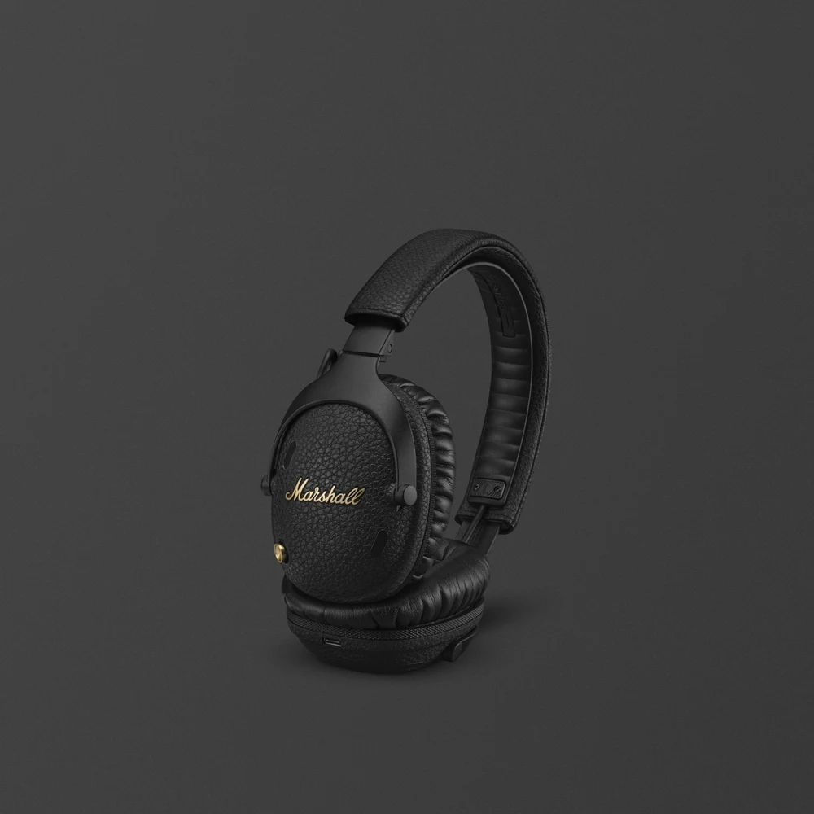

한 사람이 귀 가까이에서 듣는 경험에 초점을 둡니다.
Independent portfolio concept · Marshall 공식 사이트가 아닙니다.
Headphones / 오버이어 헤드폰
Monitor III
A.N.C.
이동 중 혼자 음악에 집중하는 오버이어 헤드폰. 주변 소음을 줄이는 ANC와 오래 듣는 배터리가 개인 청취에 어울립니다.

Best fit
혼자 듣는 이동 시간
주변과 거리를 두고 음악에 몰입해야 할 때 선택할 수 있습니다. 접이식 구조는 이동과 보관에 적합합니다.
ANC와 Transparency 모드를 전환할 수 있습니다.
공식 사양상 방수 기능이 없으며, 여러 사람이 함께 듣는 용도는 아닙니다.
Verified details
제품 사양
아래 항목은 Marshall 공식 제품 페이지의 표기를 기준으로 했습니다.
- 무선 재생 시간
- ANC 사용 시 최대 70시간 · 미사용 시 최대 100시간
- 연결
- Bluetooth 5.3 · USB-C to 3.5mm 유선 연결
- 형태와 무게
- 오버이어 · 접이식 · 250g
- 방수
- 방수 기능 없음
제품 사진·사양 출처: Marshall · Monitor III A.N.C. 공식 제품 페이지 ↗ · 확인일 2026-09-29